Simple high-level report for the JuliusCaesar agent brain.
The agent brain is not one file. It is a small set of Markdown memory files, runtime configuration files, and Python dispatch code.
In a real assistant instance, the most important files live under:
CLAUDE.mdmemory/L1/IDENTITY.mdmemory/L1/USER.mdmemory/L1/RULES.mdmemory/L1/HOT.mdmemory/L1/CHATS.mdmemory/L2/**/*.mdmemory/INDEX.mdmemory/index.sqliteops/gateway.yamlops/user_model.yamlIn this framework repository, the starter versions live under templates/init-instance/. The framework code that reads, indexes, routes, and updates them lives mostly under lib/memory/, lib/gateway/, and lib/user_model/.

L1 is the small, durable part of the brain. It should stay compact because it is loaded frequently.
| File | Purpose |
|---|---|
CLAUDE.md | Entry file for Claude Code sessions. It imports the L1 memory files and explains how to use L2 memory. |
memory/L1/IDENTITY.md | Defines who the assistant is, its boundaries, and its basic operating identity. |
memory/L1/USER.md | Stores durable information about the user: profile, preferences, communication style, standing requirements. |
memory/L1/RULES.md | Stores stable rules, corrections, lessons, and operational policies. |
memory/L1/HOT.md | Short rolling cache for what is active now. It is intentionally capped to avoid bloating every session. |
memory/L1/CHATS.md | Known chat/thread context. Claude imports it from CLAUDE.md; non-Claude gateway preambles currently load the core four L1 files. |
Template source in this repo:
templates/init-instance/CLAUDE.mdtemplates/init-instance/memory/L1/IDENTITY.mdtemplates/init-instance/memory/L1/USER.mdtemplates/init-instance/memory/L1/RULES.mdtemplates/init-instance/memory/L1/HOT.mdRuntime loader:
lib/gateway/context.pyImportant truth: lib/gateway/context.py builds a preamble for non-Claude brains by concatenating IDENTITY.md, USER.md, RULES.md, and HOT.md. Claude Code gets the imports directly from CLAUDE.md.
L2 is the larger memory vault. It is not always loaded. It is searched when needed.
Key files and code:
| File | Purpose |
|---|---|
memory/L2/**/*.md | Large durable memory: people, projects, learnings, references, business facts. |
memory/INDEX.md | Generated routing/index file for memory entries. |
memory/index.sqlite | Generated SQLite + FTS5 search index. Safe to rebuild from Markdown. |
memory/LOG.md | Human-readable memory change log. |
bin/jc-memory | CLI surface for memory search, read, write, rebuild, lint, link. |
lib/memory/db.py | Parser and SQLite/FTS5 index implementation. |
Important truth: Markdown is the source of truth. The SQLite database and INDEX.md are derived artifacts.
The gateway decides which brain and model should answer a message.

Key files:
| File | Purpose |
|---|---|
ops/gateway.yaml | Instance config for default brain, default model, triage, per-channel routing, and brain overrides. |
lib/gateway/config.py | Loads and validates gateway config. Defines supported brains and default routing config. |
lib/gateway/router.py | Pure routing decision tree. Order: explicit override, cron pin, sticky, triage, fallback/default. |
lib/gateway/runtime.py | Claims events, applies overrides, invokes the chosen brain, delivers the response. |
lib/gateway/triage/ | Optional classifiers that choose route class and brain/model. |
lib/gateway/triage/prompt.md | Triage prompt and default class-to-brain examples. |
lib/gateway/brains/dispatch.py | Registry mapping brain names to Python wrappers. |
lib/gateway/brains/*.py | Per-brain wrappers for Claude, Codex, Codex API, Gemini, Opencode, Aider. |
lib/heartbeat/adapters/*.sh | Shell adapters for native CLI brains. |
Supported brain names in code:
claudecodexcodex_apigeminiopencodeaiderThe direct OpenAI Responses API path is codex_api. Its default model is currently gpt-5.4-mini in lib/gateway/adapters/codex_api.py, unless the gateway route passes a different model.
The user model system is the part that can notice patterns over time and propose updates to memory/L1/USER.md.

Key files:
| File | Purpose |
|---|---|
ops/user_model.yaml | Instance config for autonomous user-model updates. Default is disabled. |
templates/init-instance/ops/user_model.yaml | Starter config. |
bin/jc-user-model | CLI wrapper for running/installing/applying user-model updates. |
lib/user_model/conf.py | Loads config. |
lib/user_model/corpus.py | Reads recent conversation/event history. |
lib/user_model/detector.py | Detects repeated topics, communication preferences, priority shifts, new entities, and rule drift. |
lib/user_model/proposer.py | Uses an LLM to generate structured proposals. |
lib/user_model/store.py | Stores proposals as JSONL under memory/staging/. |
lib/user_model/applier.py | Applies approved proposals safely, only inside memory/, with backups. |
lib/user_model/runner.py | Orchestrates the full detect/propose cycle. |
Important truth: this system updates the brain indirectly. It does not blindly rewrite USER.md; it creates proposals, and apply mode decides whether they wait for approval or can be applied automatically.
These are not the identity of the agent, but they help continuity.
| Path | Purpose |
|---|---|
state/gateway/queue.db | Event queue and message history used by the gateway. |
state/transcripts/*.jsonl | Per-conversation transcripts. |
state/sessions/ or sessions DB/table | Brain session ids for resuming conversations. |
state/gateway/gateway.log | Runtime log for routing, dispatch, retries, and adapter failures. |
state/workers.db and state/workers/ | Background worker state. |
These are runtime data. The durable authored brain is still the Markdown memory and config files.

In one sentence:
The agent's brain is the L1/L2 Markdown memory plus gateway model routing, with USER.md kept fresh manually or through the optional autonomous user-model proposal system.
| Need | Edit |
|---|---|
| Change who the assistant is | memory/L1/IDENTITY.md |
| Change user preferences | memory/L1/USER.md |
| Add a stable rule or correction | memory/L1/RULES.md |
| Add temporary active context | memory/L1/HOT.md |
| Add larger reference memory | memory/L2/**/*.md, then run jc memory rebuild |
| Change default brain/model | ops/gateway.yaml |
| Change route by message class | ops/gateway.yaml triage routing |
| Enable automatic user-profile proposals | ops/user_model.yaml |
docs/ARCHITECTURE.mddocs/GATEWAY.mddocs/kb/subsystem/memory-system.mddocs/kb/contract/brain-capabilities.mddocs/kb/contract/instance-layout-and-resolution.mddocs/specs/autonomous-user-model.mdtemplates/init-instance/CLAUDE.mdtemplates/init-instance/memory/L1/*.mdtemplates/init-instance/ops/user_model.yamllib/gateway/context.pylib/gateway/config.pylib/gateway/router.pylib/gateway/runtime.pylib/gateway/brains/dispatch.pylib/gateway/adapters/codex_api.pylib/memory/db.pylib/user_model/*.py